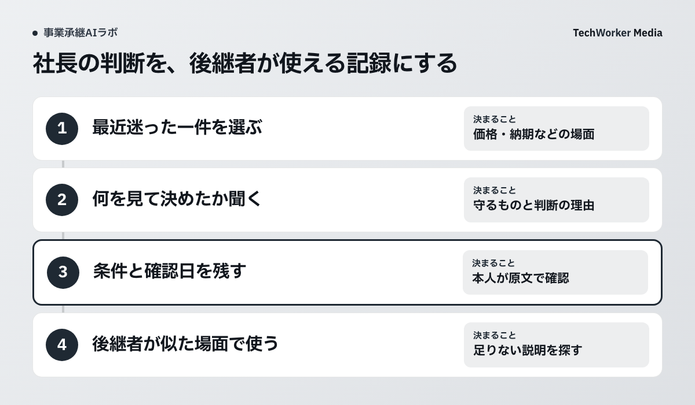

最近の判断一件から、理由と条件を聞いて残す
社長の判断を引き継ぐには、最近迷った一件を選び、何を確かめ、何を守るために決めたのかを聞きます。結論に加え、判断が変わる条件と確認日を残し、後継者が似た場面で使えるか確かめます。

社長の判断や現場の知恵を引き継ぎたい経営者、後継者、担当者に向けた記事です。読み終えると、次の対話で聞く一件を選び、理由・例外・確認日が残る記録を作れます。
会社の価値は、台帳の外にもある
決算書や設備の一覧に加え、日々の判断に使う知識も引き継ぐ対象として見ます。
後継者に渡す資料を考えると、決算書や契約書、設備の一覧が先に浮かびます。その一方で、毎日の仕事を支えている判断の根拠は、誰かの頭の中に残ったままになりがちです。
中小企業庁は、事業承継の対象を「人（経営）」「資産」「知的資産」に分けています。知的資産には、経営理念や従業員の技術・技能、ノウハウ、取引先との人脈などが含まれます。引き継ぐ対象を考えるとき、この分類が出発点になります。
本記事では、そのうち日々の判断に使う知識を残す方法を提案します。以下の手順は本メディアの実践案です。公的資料が生成AIの導入効果を保証しているわけではありません。
最初に聞くのは、最近迷った一件
抽象的な心得から始めず、価格や納期など、最近迷った一件を取り上げます。
「経営の心得を教えてください」と尋ねるより、直近の出来事を一つ選ぶほうが、判断の根拠をたどれます。たとえば、価格の相談を受けた場面や、納期の変更に対応した場面です。
説明用の架空の例を考えます。ある取引で短納期の依頼を受けた社長が、受注を見送りました。理由を「忙しかったから」で終わらせず、設備の稼働状況、品質を確認する時間、既存の約束のどれが決め手だったのかを聞きます。後継者が必要なのは、結論と、その結論が成り立つ条件です。
- 何が起き、どの選択肢で迷ったか。
- 決める前に、何を確認したか。
- 何を守るために、その結論を選んだか。
- 条件が変われば、別の判断になるか。
記録には、例外と確認日も残す
話を記録したら、「場面」「確認した情報」「判断」「理由」「例外」「確認者・確認日」を一組にします。録音する場合は、目的と共有範囲を相手に伝え、了承を得てから始めます。

生成AIには、入力を許可されたメモから各項目の下書きを作る作業を任せられます。ただし、メモにない理由を補ったり、別々の出来事を一つにまとめたりする可能性があります。話した本人が原文と照らし合わせ、「ここまでは事実」「ここは解釈」「ここは未確認」と区別します。
判断は時間とともに変わります。以前の条件で正しかった対応を、いつまでも会社のルールとして残さないように、記録には確認日を付けます。
たとえば本文の短納期の架空例では、「受注を見送った」だけでは次の判断に使えません。設備の稼働状況、品質を確認する時間、既存の約束のどれが決め手だったのかを記録します。条件が変われば受けるのか、まだ分からないのかも、社長に確かめて残します。
後継者が使ってみて、足りない説明を探す
後継者に似た場面を考えてもらい、判断に必要な説明が足りているかを確かめます。
記録を作っただけでは、引き継げたかどうかは分かりません。後継者に似た場面を考えてもらい、どの情報を見て、どう判断するかを話してもらいます。結論が違ったら、前提の取り違えなのか、今後の経営方針の違いなのかを確かめます。
すべてを一度に記録する必要はありません。まずは、特定の人が休むと仕事が止まる判断を一つ選ぶ。その対話で見つかった不足を、次の質問に変えていきます。
次の一歩
次に社長と話すときは、最近迷った判断を一つ選び、結論よりも「何を見て決めたか」を聞いてみてください。
出典・参考資料
出典の確認日：2026年10月2日。本文の手順は本メディアの実践案であり、導入効果や個別の経営判断を保証するものではありません。
- 中小企業庁「事業承継を知る」 ↗
事業承継の構成要素と知的資産の説明を参照。2026年10月2日確認。本文中の対話手順と架空の例は、本メディアが作成した実践案です。